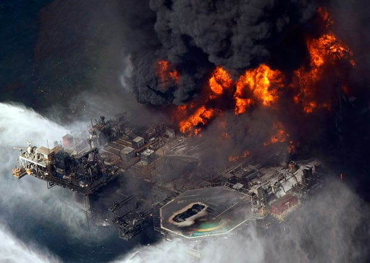
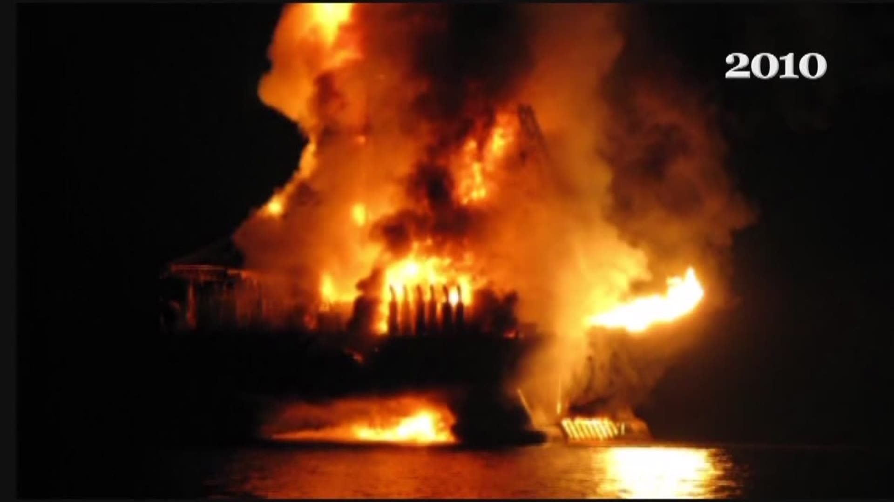

Failures & Human Factors
Investigations showed that several key alarms and safety notifications on Deepwater Horizon were disabled or configured not to disturb operators. This reduced “alarm noise”, but also removed an essential barrier that should have highlighted abnormal well conditions.
Under commercial and time pressure, the crew misinterpreted a critical negative pressure test. The human–machine interface did not clearly distinguish safe from unsafe readings, and important trends were hidden among other data. The software was available, but the way information was presented and understood failed.
Behind the technical issues was a cultural problem: digital safety systems were treated as adjustable conveniences instead of strict safeguards. Allowing muted alarms and unclear ownership over risk created a fragile environment, where a chain of small decisions could lead to a catastrophic outcome.
